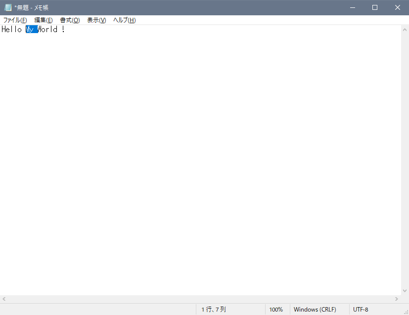

Shift+矢印キーで範囲選択をする
Word や Excel などで使うことが多い、Shift ＋ 矢印キーでの範囲選択は、taskt でも行うことができます。
このスクリプトは、下のような動きをします。
- メモ帳を実行
- 「Hello My World !」と入力
- 「My」の左にカーソルを移動する
- 「My」を選択し、削除
Shift を押しながら、矢印キーを押す操作は、Send Keystrokes 命令で「+{RIGHT}」のように入力してもできません。
下の例のように、Send Advanced Keystrokes 命令を使います。
Set Keys and Parameters 命令は下のように設定します。
- Shift は Key Down にする
- 矢印キー (下の画像では Right Arrow) は Key Press (Down + Up) にする
Optional - Return all keys to 'UP' position after execution は Yes にした方が良いでしょう。
Send Advanced Keystrokes 命令が実行された直後、メモ帳は下のような状態になります。

ちなみに、Send Keystrokes 命令で「+{RIGHT}」のように指定すると、1 文字だけは選択できる可能性があります。
しかし、今回の例のように 3 文字など複数を選択するときは、Send Advanced Keystrokes 命令を使い、Shift キーを Key Down にしたまま、必要な回数矢印キーを Key Press で入力させる必要があります。
最後に、元も子もない話になりますが、Word などで文章の一部を選択するとき、Shift+矢印キーを使うよりも、検索機能を使った方が便利かもしれません。